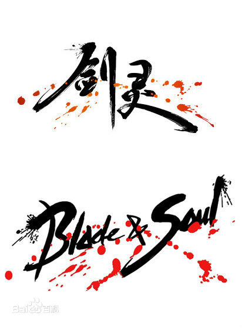
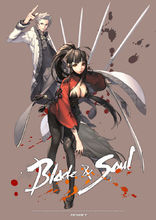
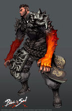
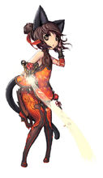
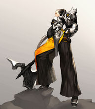
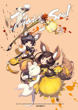
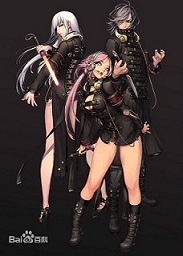
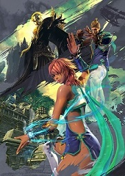

剑 灵

《剑灵》是韩国网络游戏开发商NCSoft开发的3D奇幻大型多人在线动作类游戏，中国国内由腾讯代理。
该游戏由韩国制作人裴宰贤领衔开发，亚洲插画师金亨泰担纲美术设计，
日本音乐制作人岩代太郎进行音乐监制。 《剑灵》为玩家展示了东方武侠世界、人物造型、轻功绝学、打斗体验、战斗过程，以及任务情节。
游戏种族
人族
人族是继承了“玄武”之力的种族。
人族凭借他们好奇心、创造力，以及坚韧不屈的意志，在各个领域发挥出卓越的能力，没有人会质疑人族在现世界中创造的丰功伟业，他们未来的发展也非常值得期待。
龙族
传说龙族是古代神龙的后裔，他们继承了“龙之气息”，却同时也传承了龙所受到的神之诅咒。
他们拥有巨人般的体魄和像人类用了伯棶氏忒繁衍后代一样的爆发力，发起怒来，就算是千军万马也难阻挡。 龙族的人普遍具有纯真刚直的性格，他们思维单纯，性格
简单，作为同伴来说比起其他种族更加可靠和值得信赖。但却也容易被人利用，一旦变成敌人就成为了巨大的威胁。
天族
如同仙界的仙女下凡一般，她们具有整个世界中最美丽的容貌和优雅的气质，她们是集成了凤凰意志的种族，宛如一道亮丽的风景。作为“朱雀”的后裔，对于天族中只
有女性而没有男性，她们认为这是大自然的造化和选择，所以她们通常不屑于与凡人为伍，她们喜欢与自然交流，注重秩序与调和，她们喜欢在深山中吟歌作诗，不食人间烟火，享受至高的精神境界。
灵族
虽然有着一幅可爱而柔弱的外表，灵族却是集成了圣兽“麒麟”之力的强大种族。他们拥有与冥界沟通感情的惊人力量，并且还能看到凡人无法看到的灵物。他们极具灵
性，古灵精怪一般，感觉敏锐，行动力快速，掌握着“火焰”、“冰冻”和“气”等强大力量的运用，可以将敌人玩弄于股掌之间，与人族相似的是，他们同样拥有不屈的意志力，这也是灵族在这片古老大陆上生存的根本。
游戏职业
剑士

武器：剑
擅长：格挡、压制
战斗风格：强调格挡、牵制为主的战术技巧
剑士是剑的驾驭者，是攻守兼备的职业，近距离能给敌人造成致命的伤害，强大的御剑术又可进行远程压制，其卓越的剑术可以应付所有情况。
拳师

武器：拳套
擅长：控制、连招
战斗风格：通过防守反击来展开攻击策略
拳师通过精湛的拳法和脚法，用核心技能"反击"成功后，迅速控制敌人，展开正拳、强拳、旋风腿等攻击，达到无伤杀敌的程度。
可选种族：人族、龙族
气功师

武器：彩绫
擅长：远程攻击、高输出伤害
战斗风格：以冰冻、燃烧等控制敌人的攻击方式
气功师是剑灵里最神奇的一个职业，熟练的控制寒冰与火焰，并掌握了"气"的运用，三者融会贯通，最擅长群体攻击与控制。
可选种族：灵族、天族
力士

力士可以使用巨大的斧头，
展开威力强大的近身攻击。可以把敌人举起来当做盾牌抵挡敌人攻击，属于近战职业。
力士的特色技能是扼喉和金刚不坏，无论是攻击还是防守都能游刃有余。
力士操作比较简单，招式威力较高，适合任何阶段的玩家。
生命和防御较高，尤其是格挡技——金刚不坏，在组队游戏时的作用非常明显。
力士是擅长范围攻击的职业。虽然攻击速度较慢，但大部分武功拥有范围效果，在和多个敌人战斗时非常有效。
扼喉和狂龙出海等连招可以造成大量伤害。金刚不坏则能让你免受伤害。虽然没有回避和移动类招式，但拥有所有职业中最高的防御力和生命值。
刺客
武器：短刀
擅长：施毒、偷袭
战斗风格：利用道具进行偷袭、制造高伤害
刺客是一种神秘的职业，身手敏捷，通过闪避和潜行到敌后进行迅速而华丽的攻击，利用忍者镖、鬼步等克制远程敌人，是暗夜中的梦魇。
可选种族：人族
召唤师

武器：法杖
擅长：远程攻击、控制及辅助
战斗风格：借用自然之力将怪物弱化，再由召唤兽上前进行攻击
召唤师，是一个远程攻击性职业，召唤可爱的小猫协同展开丰富多样的攻击招式，还能用"蒲公英种子"来保护周围的同伴。
灵剑士
 武器：灵剑
武器：灵剑
擅长：控制、全能
战斗风格：可控制可输出的多面手
灵剑士是一个以剑为武器的强力近战职业，它会使用大挪移控制住敌人，以及使用御剑来格挡所有攻击的职业。比较像力士、气功师、剑士的综合体。
可选种族：灵族
咒术师

武器：佩刀
擅长：格挡、压制、超神
战斗风格：多技能同时攻击、瞬间爆发
咒术师是利用冥界之力，在拥有强大的咒术攻击的同时，可以通过召唤“契约兽”压制敌人。当命中多个技能后成为“压倒”状态时，可以同时施展多个技能瞬间歼灭敌人，还可以通过名为“超神”的特殊buff，强化队友的战斗力。
可选种族：人族
气宗师

武器：玄甲
擅长：辅助 远程攻击 控制
气宗运用带有气功之力的拳法，施展各种武功招式。
气宗可以通过转换态势灵活对战远近不同的敌人，即可积攒内功对敌人发动攻击，也可对队友施展保护。
可选种族：天族